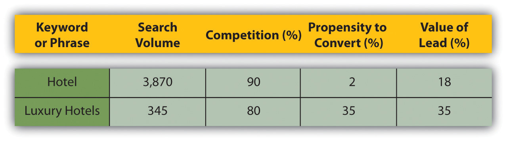
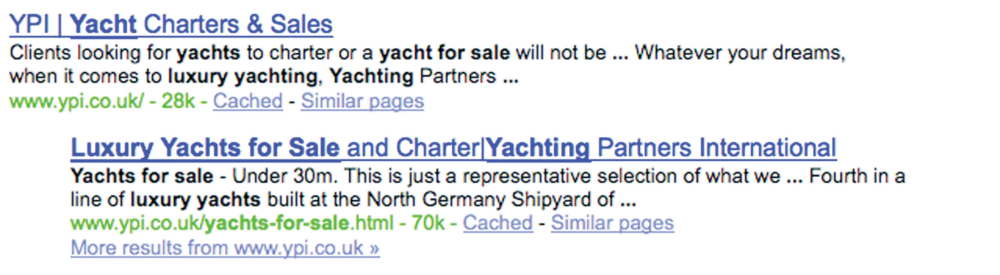

With millions of people performing millions of searches each day to find content on the Internet, it makes sense that marketers want their products to be found by potential consumers. Search engines use closely guarded algorithms to determine the results that are displayed. However, determining what factors these algorithms take into account has led to a growing practice known as search engine optimization.
Search engine optimization (SEO) is the practice of optimizing a Web site so as to achieve preferred ranking on the search engine results pages (SERPs). Someone who practices SEO professionally is also known as an SEO (search engine optimizer).
SEO can be split into two distinct camps: white-hat SEO and black-hat SEO (with some grey-hat wearers in between). Black-hat SEO refers to trying to game the search engines. These SEOs use dubious means to achieve high rankings, and their Web sites are occasionally blacklisted by the search engines. White-hat SEO, on the other hand, refers to working within the parameters set by search engines to optimize a Web site for better user experience. Search engines want to send users to the Web site that is most suited to their needs, so white-hat SEO should ensure that users can find what they are looking for.
By the mid-1990s, Webmasters had begun to optimize their sites for search engines due to a growing awareness of the importance of being listed by the various engines. Initially, all a Webmaster needed to do was submit the URL (uniform resource locator) of a Web page for it to be indexed. Search engines relied on the metadata, information that Webmasters inserted in the code of a Web page, to determine what a Web page was about and to index it appropriately.
Industry analyst Danny Sullivan records that the earliest known use of the term “search engine optimization” was a spam message posted on Usenet, an online forum or message board, on July 26, 1997.Danny Sullivan, “Who Invented the Term ‘Search Engine Optimization’?” Search Engine Watch, June 14, 2004, http://forums.searchenginewatch.com/showpost.php?p=2119&postcount=10 (accessed June 6, 2008).
Realizing the importance of being ranked highly in search results, Webmasters began using the search engine’s reliance on metadata to manipulate the ranking for their Web sites. To combat this, search engines in turn have developed more complex algorithms including a number of other ranking factors.
While at Stanford University, Larry Page and Sergey Brin developed a search engine, called Backrub, that relied on a mathematical algorithm to rank Web pages. This was the precursor to Google. They founded Google in 1998, which relied on PageRank and hyperlink analysis as well as on-page factors to determine the prominence of a Web page. This enabled Google to avoid the same kind of manipulation of on-page factors to determine ranking.
PageRank relies on the uniquely democratic nature of the web by using its vast link structure as an indicator of an individual page’s value. In essence, Google interprets a link from page A to page B as a vote, by page A, for page B. But Google looks at more than the sheer volume of votes, or links a page receives; it also analyzes the page that casts the vote. Votes cast by pages that are themselves “important” weigh more heavily and help to make other pages “important.”“Understanding Google Page Rank,” Accu Web Hosting, May 20, 2006, http://www.accuwebhosting.com/Articles/Understanding_Google_Page_Rank.html (accessed June 18, 2010).
PageRank was based on the practice of academic citations. The more times an academic paper is cited, the more likely it is an authority paper on the subject. Page and Brin used a similar theory for their search engine—the more times a Web page or Web site is linked to, the more likely it is that the community considers that page an authority. It should be noted that the importance of page rank has been greatly reduced over the years.
Ranking highly in search results is vital to Web sites, so Webmasters have adapted as search engines have updated their algorithms to avoid being “gamed.” Today, Google says it uses more than two hundred different factors in its algorithm (which changes over four hundred times yearly) to determine relevance and ranking. None of the major search engines disclose the elements they use to rank pages, but there are many SEO practitioners who spend time analyzing patent applications to try to determine what these are.
Search engines need to help users find what they’re looking for. To make sure they list the best results first, they look for signals of the following:
Search engine optimization (SEO), also called organic or natural optimization, involves optimizing Web sites to achieve high rankings on the search engines for certain selected key phrases.
This is achieved by making changes to the hypertext markup language (HTML)The “language” read by Web browsers. Certain HTML “tags” are used to structure the information and features within a Web page. As an example, HTML e-mails usually contain graphics and can be interactive. code, content, and structure of a Web site, making it more accessible for search engines, and by extension, easier to find by users. These are also known as on-page factors. SEO also involves off-page factors—these generally build linksA link is a URL (uniform resource locator) imbedded on a Web page. If you click on the link you will be taken to that page. to the Web site. Activities to increase links to a Web site, including social media and Web public relations (WebPR), are considered off-page SEO.
SEO is an extremely effective way of generating new business to a site. It is a continuous process and a way of thinking about how search engines see your Web site and how users use search engines to find your Web site. It’s search psychology.
SEO is a fairly technical practice, but it can easily be broken down into five main areas:
Search engines encounter two kinds of obstacles:
To ensure that search engines can access your content, you must remove technical barriers. Those who wish to achieve the best results must follow best Web development practices. These best practices are outlined in Chapter 13 "Web Site Development and Design".
Rand Fishkin of SEOmoz says, “The key to ensuring that a site’s contents are fully crawlable is to provide direct, HTML links to each page you want the search engine spiders to index. Remember that if a page cannot be accessed from the home pageThe first page of any Web site. The home page gives users a glimpse into what your site is about—very much like the index in a book or the contents of a magazine. (where most spiders are likely to start their crawl) it is likely that it will not be indexed by the search engines.”Rand Fishkin, The Beginner’s Guide to SEO, SEOmoz, February 25, 2006, http://www.seomoz.org/article/beginners-guide-to-search-engine-optimization (accessed April 3, 2008).
Chapter 13 "Web Site Development and Design" delves more deeply into building a search engine–friendly Web site.
Search engines encounter two kinds of obstacles:
Key phrasesThe word or words a page or Web site is being optimized for. Also used to refer to words that are utilized by search engine users. are the very foundation of search. When a user enters a query on a search engine, she uses the words that she thinks are relevant to her search. The search engine then returns those pages it believes are most relevant to the words the searcher used.
Keyword or key phrase? Key phrases are made up of keywords, but you can get away with referring to a key phrase as keywords.
Search engines have built a sophisticated understanding of semantics and the way we use language. So, if a user searches for “car rental,” the search engine will look for pages that are relevant to “car rental” as well as possibly “car hire,” “vehicle hire,” and so forth. Search engines have also built up knowledge around common misspellings and synonyms and common related searches so as to try to return the best results for a user.
Because of this, it is crucial that Web sites contain content with keywordsA word or words used by a searcher on a search engine. In SEO, keywords are the words that a Web site is optimized to rank for, and in PPC, keywords are bid on by advertisers. that are likely to be used by their target audience. Web sites need to appear when their potential customers are searching for them.
As a Web site owner, or the marketer for a Web site, we need to build a list of some of the terms our potential customers are likely to use to find the things we are offering. A big part of keyword research is understanding search psychology. When we build our key phrase or keyword list, we are tapping into the mental process of searchers and putting together the right mix of keywords to target.
There are four things to consider when choosing a keyword:
Value per conversion. What is the average value per prospect attracted by the keyword? Depending on the nature of your Web site, the average value per lead varies. Using the hotel example again, consider these two terms: “luxury Cape Town hotel” and “budget Cape Town hotel.”
Both are terms used by someone looking to book a hotel in Cape Town, but it is likely that someone looking for a luxury hotel is intending to spend more. That means that particular lead has a higher value, particularly if you have a hotel-booking Web site that offers a range of accommodation.
How do you know where to start on building your keyword list? It requires a little thought and a fair amount of research using tools that are readily available to help you both grow and refine your list of keywords.
Think about the words you would use to describe your business and about the questions or needs of your customers that it fulfils. How would someone ask for what you are offering? Consider synonyms and misspellings as well.
Bear in mind that people might not ask for your services in the same way you describe them. You might sell “herbal infusions,” whereas most people would ask for “herbal teas,” although some might request a “tisane.” If you are selling Tamagotchis, remember that the spelling can be tough to recall, and you might need to consider common misspellings like “tumagochi” or “tamagochi.”
Misspellings are important, but when you are selling something, consider what the misspelling tells you about the traffic you are getting. With everything, analyze your traffic to assess for quality.
Look to see what terms customers are already using to find you, and add those to your list. If they are already sending you some traffic, it is worth seeing if you can increase that traffic.
There are several tools available for keyword discovery, and some of them are free! Some tools will scan your Web site and suggest keywords based on your current content. Most will let you enter keywords and will then return suggestions based on past research data with the following:
See “Tools of the Trade” in Chapter 6 "Search Engine Optimization", Section 6.6 "Emerging Trends" for some tools that you can use.
Bearing in mind the factors that make a good keyword, you need to aim for the right mix of keywords. Low-volume terms, with low levels of competition, may be a good way to get traffic in the short term, but don’t be scared off by high levels of competition in the high-value, high-volume areas. It might take longer to get there, but once there, the revenue can make it all worthwhile.
It is a good idea to create a spreadsheet of the list of keywords, where you can also store information relevant to that keyword.
Figure 6.1 How to Tabulate Your Keywords and Store Relevant Information
This will help you to choose the right keywords to target. These lists should be created for the whole Web site; they can then be broken down for each page you want to optimize.
There are four things to consider when choosing a keyword:
Once keywords and phrases are selected, we need to ensure that the site contains content to target those key phrases. We must ensure that the content is properly structured and that it sends signals of relevance. Content is the most important part of your Web site. We must create relevant, targeted content aiming at our selected key phrases. Content already has several roles to play on your site:
Now it must also send signals of relevance to search engines. You need to use the keywords on the content page in a way that search engines will pick up and users will understand.
Each Web page should be optimized for two to three key phrases: the primary key phrase, the secondary key phrase, and the tertiary key phrase. A page can be optimized for up to five key phrases, but it is better to have more niche pages than fewer unfocused pages. Here are some guidelines:
Images should also be optimized with the relevant keywords. Search engines cannot see images, so rely on the way that an image is described to determine what the image is about. Screen readers also read out the image descriptions, which can help visually impaired readers to make sense of a Web site. Lastly, images are sometimes also shown on the SERPs, and of course one can also search images using most of the major search engines.
Figure 6.2 Page Targeting Using the Phrase “Handmade Bags”
Source: http://www.babazeka.com.
Just as an image can help emphasize the content on a page, it can also help search engines in ranking pages, provided the image is labeled correctly.
Here are some ways to optimize images with key phrases for search engine optimization (SEO):
SEO is both a science and an art. Focusing on writing quality content while sticking to a few guidelines when it comes to tags and URLs is the best way to ensure results. Remember, you want search engines to rank you highly for your content, but you also want to ensure that the content is a pleasure to read.
Adding fresh content that carries brand values regularly to your site will also encourage the search engines to crawl your site more frequently.
Use your Web site and its pages to establish and reinforce themes. Information can always be arranged in some kind of hierarchical structure. Just as a single page can have a heading and then get broken down into subheadings, a large Web site can have main themes that get broken down into subthemes. Search engines will see these themes and recognize that your Web site contains rich content.
Links are a vital part of how the Internet works. The purpose of a link is to allow a user to go from one Web page to another. Search engines, doing their best to mimic the behavior of humans, also follow links.
Besides allowing search engine spiders to find Web sites, links are also a way of validating relevance and indicating importance. When one page links to another, it is as if that page is voting or vouching for the destination page. Generally, the more votes a Web site receives, the more trusted it becomes, the more important it is deemed, and the better it will rank on search engines.
Links help send signals of trust. Signals of trust can only come from a third-party source. Few people will trust someone who says, “Don’t worry, you can trust me” unless someone else, who is already trusted says, “Don’t worry, I know him well. You can trust him.” It is the same with links and search engines. Trusted sites can transfer trust to unknown sites via links.
Links help validate relevance. Text links, by their very nature, contain text (thank you, Captain Obvious). The text that makes up the link can help validate relevance. A link like “Cape Town hotel” sends the message that says, “You can trust that the destination site is relevant to the term ‘Cape Town hotel.’” If the destination Web page has already used content to send a signal of relevance, the link simply validates that signal.
Here is the hypertext markup language (HTML) code for a link:
<a href=“http://www.targeturl.com/targetpage.htm”>Anchor Text</a>
“http://www.targeturl.com/targetpage.htm” is the page that the link leads to. “Anchor Text” is the text that forms the link.
The link sends a signal that the target URL (uniform resource locator) is important for the subject of the anchor text.
Why might a site want to tell the search engine not to follow a link?
There is a lot more information that can be included in this anatomy, such as instructions telling the search engine not to follow the link or instructions to the browser as to whether the link should open in a new window or not.
<a href=http://www.targeturl.com/targetpage.htm rel=“nofollowCan be included in links when you don’t want to vouch for the target URL (uniform resource locator). Originally introduced by Google to try to combat and comment spam.”>Anchor Text</a>
The instruction rel=“nofollow” can be included in links when you don’t want to vouch for the target URL. Search engines do not count nofollow links for ranking purposes. It was initially introduced by Google to try to combat comment spam.
Of course, not all links are equal. Some sites are more trusted than others. So if they are more trusted, then links from those sites are worth more. Likewise, some sites are more relevant than others to specific terms. The more relevant a site, the more value is transferred by the link. Well-known and established news sites, government sites (.gov), and university domains (.edu) are examples of sites from which links can carry more weight.
Search algorithms also consider relationships between linked sites. By analyzing various things, the engines try to determine if the links are natural links or if they are manipulative, artificial links created solely for ranking purposes. Manipulated links are worth very little compared to natural links and may lead to a drop in search engine rankings.
The search engine algorithm will also determine the relevancy of the referring Web site to the site being linked to. The more relevant the sites are to each other, the better.
Why would government and university Web sites be considered to have more authority? What sort of Web sites would they be more likely to link to?
With links playing such a vital role in search engine rankings and traffic for a Web site, everyone wants more of them. The more relevant the referring Web site is to your Web site, the better the link. There are certainly dubious means to generating links, most of which can actually result in being penalized by the search engines. However, here are some ways that ethical and honest Web site owners and marketers (and that’s what you are) go about increasing the number of links to their Web sites.
If people find your site useful, they are more likely to link to it. It is not necessary, nor possible, to try to write content that will appeal to the whole Internet population. Focus on being the best in the industry you are in and in providing value to the members of that community. Make sure that valuable content is themed around your key phrases.
Interview experts in your field, and host those interviews on your Web site. Think outside the box for quirky, relevant items that people will link to. Calculators are popular tools, and we don’t just mean the ones that add two and two together. If you have a Web site selling diet books, for example, create a tool that helps users calculate their body mass index (BMI) and target weight.
Creating a game that people want to play is a great way to generate links. Make sure that the theme of the game is based on the key phrases for your Web site, so that when others talk about and link to the game, they are using your key phrases!
Widgets, browser extensions, and other useful software that users love to use all help generate links for a Web site. Quirk has released a Firefox extension called SearchStatus that is exceptionally useful to the SEO community and is downloaded thousands of time each month. Each time someone mentions this SEO tool, they link to Quirk.
In Chapter 12 "Web Public Relations", you’ll learn how taking public relations (PR) online can provide valuable links to your content. This involves writing content relevant to your industry and then distributing that content.
Find out who is linking to your competitors and which noncompeting sites are ranking highly for your key phrases. Use this information to identify sites to target for link requests.
Using Yahoo! Site Explorer, you can explore your sites—and your competitors’. Find it at http://siteexplorer.search.yahoo.com.
With all link-building tactics, make sure that you use your key phrases when communicating. You will be telling people how to link to you and ensuring that search engines notice your authority.
There are many ways to get more links to your site:
SEO (search engine optimization) is a constantly evolving activity. As the search engine algorithms become more sophisticated, they assess Web sites in more complex ways to arrive at suitable search results. There are significant changes on the horizon in how search engines will index and present their results. These changes are aligned with a goal of sorting through the exponentially increasing amounts of data available on the Web and giving users better and more targeted search results, which they will find useful.
There are four strong emerging trends for SEO:
These four trends are making optimizing Web sites for search engines even more complex.
The first two trends revolve around how the search engines are trying to accommodate the geographic and personal preferences of a user so as to present them with the best contextual results. By localizing, the search engines are presenting information in the language and geographic context of the user.
In personalizing search, the search engines are trying to align with what they have determined would be more appropriate for that specific user. Personalized search targets users’ preferences on two bases: explicitly and implicitly.
Explicit personalized search is based on an interpretation, by the search engines, of data and information the users provide directly to search engines, such as location, age, language, and gender.
Implicit personalized search is based on data and information search engines gather by analyzing users’ behavior. Search engines will track the pages users frequently visit or how they use certain sites—such as Gmail or bookmarking sites. Based on this, the search engines will predict what a user is probably interested in and tailor the results it presents to that user accordingly.
Surveys suggest that users are generally in favor of personalizationSearch results are personalized to, or vary according to, what search engines think a user is actually interested in. and are willing to trade personal information to benefit from better-quality results from the search engines. Large search engines, like Google, are even offering end users the opportunity to tell them what results they like—through the launch of user feedback mechanisms such as Google Search Wiki (launched in 2008).This kind of functionality allows the user to tell search engines what results they like or don’t like and would like to see (or not) again.
To optimize a site properly, factors like personalization and localization need to be taken into account and the site needs to be honed to do the following:
Search engines want their results to be highly relevant to Web users to make sure that Web users keep returning to the search engine for future searches. And the best way to establish relevance to users—how they use Web sites, of course!
Usage data are the most effective way of judging the true relevancy and value of a Web site. For example, if users arrive on a Web site and go back immediately, chances are it wasn’t relevant to their query in the first place. However, if a user repeatedly visits a Web site and spends a long time on the site, chances are it is extremely relevant. When it comes to search engines, relevant valuable sites get promoted, and irrelevant sites get demoted.
Search engines use cookies to maintain a history of a user’s search activity. This will include keywords used and Web sites visited from the search engine. Search engines gather data on the click-through rate of results and on bounce rates.
Most search engines also provide other services, all of which can be used to gather data relevant to search. For Google, some examples of these services include the following:
As of 2010, this is a relatively new area of SEO. It no doubt plays a part in search engine rankings, and that contribution is set to grow. So what does this mean for SEO? When it comes to a Web site, SEO must do the following:
Black-hat SEOUnethical techniques that are used to get higher search rankings. refers to practices that attempt to game the search engines. Should a search engine uncover a Web site that is using unethical practices to achieve search engine rankings, it is likely to remove that Web site from its index.
In 2006, Google found that the BMW Germany Web site http://bmw.de was using a JavaScript URL (uniform resource locator) redirect to send search engine spiders and Web visitors to different pages with different content. It was removed from the Google index until the Webmaster had ensured that the Web site met Google’s guidelines.
Google publishes guidelines for Webmasters, available through Google’s Webmaster Central (http://www.google.com/webmasters). As well as outlining best practice principles, Google has supplied the following list of precautions:
The bottom line: design Web sites for users first and foremost, and don’t try to trick the search engines.
Google offered a new feature called real-time search, which went live in December 2009. It’s designed to further increase the optimal user experience with search and follows earlier features on Google search engine results pages (SERPs), which now regularly include images, news items, videos, and shopping listings. With real-time search, Google now displays a dynamic function in its SERPS, where you can see the latest mentions or URLs published on the Web, related to your search term.
This is ideal for social media and microblogging purposes, and Google has partnered with the likes of Twitter, MySpace, FriendFeed, Jaiku, Identi.ca, and other online businesses to offer this initiative. It opens up a number of opportunities and increases the importance of a strong social media presence to augment your search engine marketing efforts.
There are a number of tools available to assist with SEO. Some are made available by search engines, and some are developed by agencies and individuals who specialize in SEO. Most are available for free.
URL: http://www.google.com/webmasters
Google provides guidelines to Webmasters and tools to help ensure your Web site is being indexed.
URL: http://www.quirk.biz/searchstatus
Quirk SearchStatus is a Firefox extension that allows you to easily view key SEO information related to the page you are visiting. As well as linking to Alexa and Compete rankings and a Whois look up, Quirk SearchStatus will highlight keywords on a page and allow you to easily access link reports from each of the major search engines.
SEOBook.com provides a number of tools that assist any SEO. For example, Rank Checker is a Firefox extension that allows you to save a number of keywords and to perform regular searches on them, giving you the ranking of your chosen URL for each keyword in the search engines selected. They also have tools to help with keyword discovery.
URL: http://www.seomoz.org/tools
SEOMoz provides a wealth of articles and forums, as well as excellent SEO tools and guides. Some are free, but become a “PRO” member to access them all.
There are a number of tools available, some free and some that require a fee, to assist with keyword discovery. Some include Trellion’s Keyword Discovery Tool (http://www.keyworddiscovery.com) and Wordtracker (http://www.wordtracker.com).
Webmaster World (http://www.webmasterworld.com) is frequented by SEOs and Webmasters aiming to stay current with latest trends and search engine updates.
URL: http://www.google.com/webmasters/docs/search-engine-optimization-starter-guide.pdf
Google provides a free starter guide, useful for anyone new to SEO.
URL: http://www.google.com/insights/search
This provides valuable information about search terms you may want to target for SEO purposes. It also provides regional interest (i.e., by geography) for search terms, which is increasingly important as search engines move toward localization and personalization in their search focus.
Optimizing a Web site for search engines should entail optimizing the Web site for users. Done properly, it should result in a better user experience, while ensuring that search engines index and rank the Web site well.
However, it can be tempting to focus on the technicalities of SEO while forgetting that both robots and humans need to read the same Web site. One should not be sacrificed for the other.
Search engines update their algorithms regularly. Each update is an attempt to improve search results but can result in loss of rankings for some Web sites, depending on the update. A contingency plan, such as a prepared PPC (pay-per-click) campaign, needs to be in place to cope with a sudden drop in rankings.
As with any eMarketing practice, SEO should not be the only focus of eMarketing efforts. It works best when part of a holistic eMarketing strategy.
There are three strong emerging trends for SEO:
Founded in 1972, Yachting Partners International (YPI) is one of the world’s premier yacht brokerage companies, offering services on everything from yacht chartering, acquisitions, and sales to construction and management from their head office in England.
The yacht business is extremely competitive, whether online or offline. The YPI Web site needed to stand out from the crowd and be recognized as the authority on yachting and charter holidays. To ensure that this was possible, the keyword strategy matched these objectives and gave YPI prominence on the search engine results pages (SERPs).
The search engine optimization (SEO) strategy dictated a need for high-traffic terms rather than niche, long-tail phrases. This would ensure that YPI was above the fold for important searches. During the keyword research phase, primary keywords were allocated to the key themes up for optimization. Secondary and tertiary keywords represented the supporting terms and any relevant synonyms.
Before optimization, the YPI site didn’t have many of the required elements for a successful SEO campaign. The technical considerations, essential to a site’s success, work hand in hand with traditional, keyword, and theme-focused SEO efforts.
Figure 6.3 The Yachting Partners Web Site
Source: Used by permission from Yachting Partners International.
The technical considerations that first needed to be addressed included the following:
Figure 6.4 Search Results for YPI
The results that occurred after these changes were implemented really speak for themselves. During the initial stages of the optimization, the Yachting Partners International Web site had only a handful of inbound links and indexed pages but currently has 1,350 pages indexed by Google; 7,830 indexed by MSN; and 1,688 by Yahoo! HTML and XML site maps have been implemented to assist with search engine indexing.
Visit the YPI Web site at http://www.ypi.co.uk.
Sergey Brin and Lawrence Page, “The Anatomy of a Large-Scale Hypertextual Web Search Engine,” http://infolab.stanford.edu/~backrub/google.html (accessed April 3, 2008).
“comScore Releases 2008 U.S. Search Engine Rankings,” press release, comScore, February 21, 2008, http://www.comscore.com/press/release.asp?press=2068 (accessed April 3, 2008).
Matt Cutts, “Ramping Up on International Webspam,” Matt Cutts: Gadgets, Google, and SEO, February 4, 2006, http://www.mattcutts.com/blog/ramping-up-on-international-webspam (accessed June 1, 2008).
“Google Search’s Golden Triangle,” Eyetools, http://www.eyetools.com/inpage/research_google_eyetracking_heatmap.htm (accessed April 3, 2008).
“Relevance Meets the Real-Time Web,” Google, December 7, 2009, http://googleblog.blogspot.com/2009/12/relevance-meets-real-time-web.html (accessed June 23, 2010).
Chris Sherman, “A New F-Word for Google Results,” Search Engine Watch, March 8, 2005, http://searchenginewatch.com/showPage.html?page=3488076 (accessed April 3, 2008).
“Technology Overview,” Google, http://www.google.com/technology (accessed April 3, 2008).